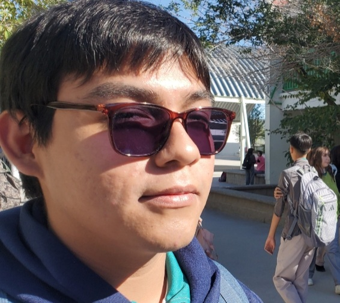
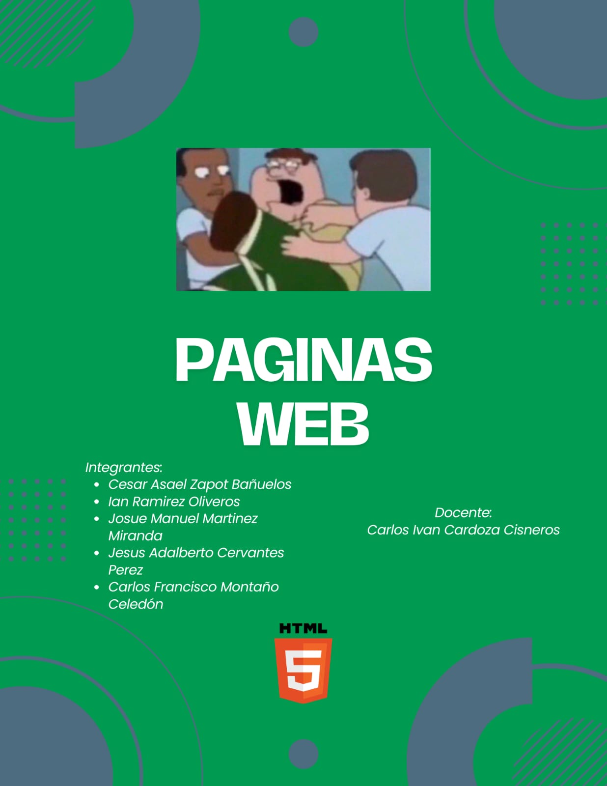

¿QUE RECORDAMOS?
Uno de mis recuerdos favoritos fue cuando no estuvo disponible el salon de la capacitacion
y tuvimos que usar un salon del edificio A. Solo tuvimos una clase a mano sobre el desarrollo de paginas web
y debiamos memorizarnos varias etiquetas del lenguaje HTML.

Otro recuerdo que tengo dentro de mi memoria fueron todas las veces que entregamos
nuestra carpeta de capacitacion como proyecto final del bimestre.
La primeras dos veces lo hicimos junto con otras personas pero despues de ahi fuimos
Los mismos de siempre dentro del grupo de la carpeta de trabajos de la capacitacion.
